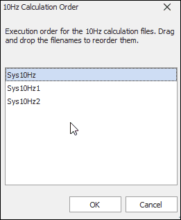

iTest User's Guide
Calculations are a series of periodically calculated formulas. The calculated results are stored as channel values that can be logged, displayed, verified for limits and quality, and more. Calculations can also transform raw inputs, such as temperature, pressure, or voltage, from a test cell into required engineering unit values. These calculations supplement the VCL code and support the flow of control for test logic. The syntax of these calculations follow standard algebraic notation, utilizing expressions constructed from a sequence of operators, operands, and functions.
Continuous calculations begin as soon as iTest is initialized and continue until the system is exited. Calculations are stored in separate files within folders that represent the rate of calculations. The following calculation folders are available, by default:
For the 1000 Hz calculation folder to appear, the Support1kHz powertek.ini setting must be set to TRUE.
By default, iTest calculations are supported at the following rates: 1 Hz, 10 Hz, 100 Hz, or system rate. To support calculations at a rate up to 1000 Hz, the Support1kHz powertek.ini option must be set to TRUE, and it must be running on a dedicated machine with a real-time operating system. A special task executes and enables the scanning of PIDs, logging, and calculations at rates up to 1000 Hz.
Calculations are executed in the following priority:
 |
CAUTION: | Calculations running at 1000 Hz have the potential to slow the system. Calculations that involve strings are CPU intensive and should be calculated at 10 Hz or 1 Hz. |
Calculations use the following format:
<ChannelName> <Formula>
 |
NOTE: | A single line in the Calculations editor cannot exceed 1023 bytes. |
Dynamic calculations run independently and asynchronously to the real-time system as they are processed by separate executables. This enables you to perform modifications to the calculation file while it is actively running without affecting the system or causing a full rebuild. Test Manager and SolutionBuilder support the creation of multiple dynamic calculation files, but only ten may be active at a given time. The CalcEngine application executes the dynamic calculations and processes them at system scan rate.
Dynamic calculations support the following channel types:
|
NOTE: | The use of string channels is not supported. |
To use dynamic calculations, the CalcEngine application can be configured to initiate upon startup. To do so, edit the powertek.ini file in the $SUPPORTDIR with the following additions:
CalcEngine Configuration Settings
| Operating System | Description |
| Windows | Add \\calcengine.exe>> to the Preload= entry. |
| INtime | Add\\calcengine.rta>> to the RTxPreload= entry. |
For INtime, the name used is dependent on the system version. For more information, refer to the INtime Extensions documentation to determine which RTA file to use. For INtime >= 4.2, specify the CPU node on which to run (e.g., \\CalcEngine.rta -nNodeA>>). CalcEngine.rta may be (re)started with a mailslot to data_engine (e.g., "CalcEngine Start" or "CalcEngine Start -nNodeA").
You can change the order that calculations are executed within a calculation rate folder. This enables you to have a finer control over the order that the files are run. Calculations can only be ordered within a specific rate. In other words, you cannot order 10 Hz and 100 Hz calculations.
To modify the calculation order for a specific folder rate, right-click on a folder and select Order Calculations. This opens the Calculation Order dialog, where you can drag and drop the calculation files to reorder when the calculations are executed.
Ordering Calculations

When finished, click OK. Note that the new order is not reflected visually in the list of calculations.
In addition to the manual reordering of your solution’s calculations, module calculations can be controlled by defining the process order value of each module. A lower process order number places the module’s calculations earlier in the calculation loop. By default, new modules have a process order of 2 and the calculations in the system module have an order of 1. Without adjusting these values, the calculations in the base system occur prior to the calculations in the modules.
|
NOTE: | If two modules have the same order, the order by which they are processed is indeterminate. |